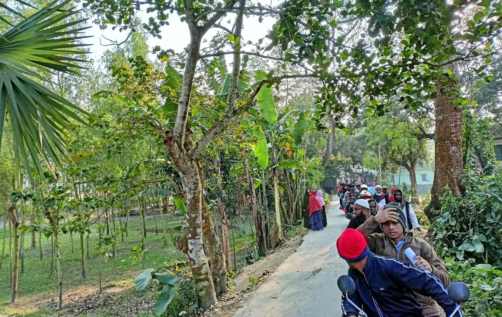

ইউপি নির্বাচনকে সামনে রেখে সংরক্ষিত মহিলা মেম্বর পদপ্রার্থী অঞ্জনা বেগমের গণসংযোগ।
শীতের কুয়াশা যেমন জানান দেয়, শীতের আগাম খবর। ঠিক তেমনিই নির্বাচনী প্রচারণায় স্লোগান, আনন্দ মিছিল কিংবা মোটরসাইকেল শোডাউন জানান দেয় নির্বাচনীয় আগাম খবর।
"উড়ছে পাখি দিচ্ছে ডাক,তালগাছ মার্কা জিতে যাক" ছন্দে ছন্দে স্লোগানে মুখরিত হচ্ছে সংরক্ষিত মহিলা মেম্বর প্রার্থী অঞ্জনা বেগমের মোটরসাইকেল শোডাউনে।অন্যদিকে ভোটারদের বাড়ি বাড়ি গিয়ে প্রতিনিয়ত চালানো হচ্ছে গণসংযোগ। আর মাত্র ক'য়েক দিন, অনুষ্ঠিত হবে ভোটারদের দীর্ঘ প্রত্যাশিত নির্বাচন।ভোটাররা কাকে ভোট দিবে, কে কেমন?এইসব মনের গহীনে ঠিক করে লুকায়িত রেখেছে আর প্রার্থীরাও কে কত ভোট পেতে পারে তা আন্দাজ করে নিয়েছে এবং তাদের শেষ সময়ের নির্বাাচনী প্রচারণা চালিয়ে যাচ্ছেন।
আসন্ন ২৬শে ডিসেম্বর রোজ রবিবার চতুর্থ ধাপের ইউনিয়ন পরিষদ নির্বাচনকে সামনে রেখে কামারখন্দ উপজেলার রায়দৌলতপুর ইউনিয়নে বইছে নির্বাচনী আমেজ।
এই ইউনিয়নের চেয়ারম্যান পদ-প্রার্থীদের পাশাপাশি ইউপি সদস্য এবং সংরক্ষিত মহিলা মেম্বর পদপ্রার্থীরাও প্রচার প্রচারণায় ব্যস্ততাময় সময় পার করছেন। এরই ধারাবাহিকতায় ইউনিয়নের ৪,৫ ও ৬ নং ওয়ার্ডের সংরক্ষিত মহিলা মেম্বর পদপ্রার্থী মোছাঃ অঞ্জনা বেগম ব্যাপক নির্বাচনী প্রচার-প্রচারণা চালিয়েছেন।২৫টি মোটরসাইকেল এবং বিপুল সংখ্যক কর্মী-সমর্থক নিয়ে তার নির্বাচনী ওয়ার্ডের কাজিপুরা,বাঁশবাড়িয়া,হায়দাপুর,শ্যামপুর,পেঁছরপাড়া,ঠাকুরঝিপাড়া,ধলেশ্বর এবং তাজুরপাড়া প্রচার-প্রচারণা চালান।
মোটরসাইকেল শোডাউন শেষে এবং গনসংযোগ কালে সংরক্ষিত মহিলা মেম্বর পদপ্রার্থী মোছাঃ অঞ্জনা বেগম বলেন, ‘এলাকার সর্বস্থরের মানুষের ভালোবাসা ও চাওয়া পাওয়াকে প্রাধান্য দিতেই ইউনিয়ন পরিষদের সদস্য পদে নির্বাচন করছি। আমি সাধারণ মানুষের সেবায় নিজেকে নিয়োজিত রেখে সরকারের বরাদ্ধের সম্পূর্ণ সঠিক বন্টনের মাধ্যমে অসহায় গরীব মানুষের আস্থা অর্জনে সর্বদা সচেষ্ট থাকবো। আমার দৃঢ় বিশ্বাস আসন্ন ইউপি নির্বাচনে আপনারা যোগ্য ব্যাক্তিকে সমর্থন করে আপনাদের সেবিকা নির্বাচিত করবেন।
মহিলা মেম্বর পদপ্রার্থী অঞ্জনা বেগমের গণসংযোগ
5 January, 2022
